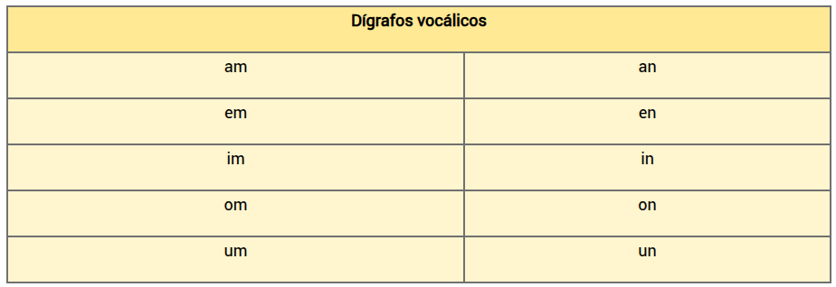
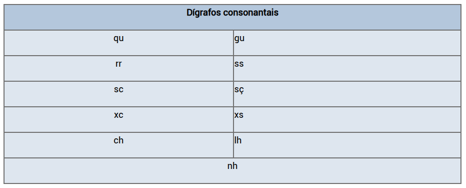

Dígrafo é o encontro entre duas letras para representar um único som na fala, ou seja, as letras não representam seus sons individuais, e sim um único som resultante do encontro entre elas. Alguns dígrafos representam sons únicos, que nenhuma letra sozinha ou junto a outra letra conseguiria representar na língua portuguesa, como os dígrafos “nh” e “lh”. Outros dígrafos, porém, representam sons equivalentes ao som de outras letras, como os dígrafos “sc”, “sç” e “ss”, que têm o mesmo som que a letra “s” em algumas palavras, o dígrafo “rr”, que tem o mesmo som que a letra “r” tem em início de palavra, e o dígrafo “ch”, que tem o mesmo som que a letra “x”.
Os dígrafos são classificados de acordo com o tipo de som que representam.
O dígrafo vocálico representa som de vogal, especificamente sons nasais (aqueles que usam a articulação da boca em conjunto com o nariz para serem feitos). Ocorre no encontro entre uma consoante e uma vogal. Os dígrafos vocálicos são:
O dígrafo consonantal representa som de consoante, portanto, ocorre no encontro entre duas consoantes ou entre uma consoante e uma vogal (no caso de “qu” e “gu”). Os dígrafos consonantais são:
